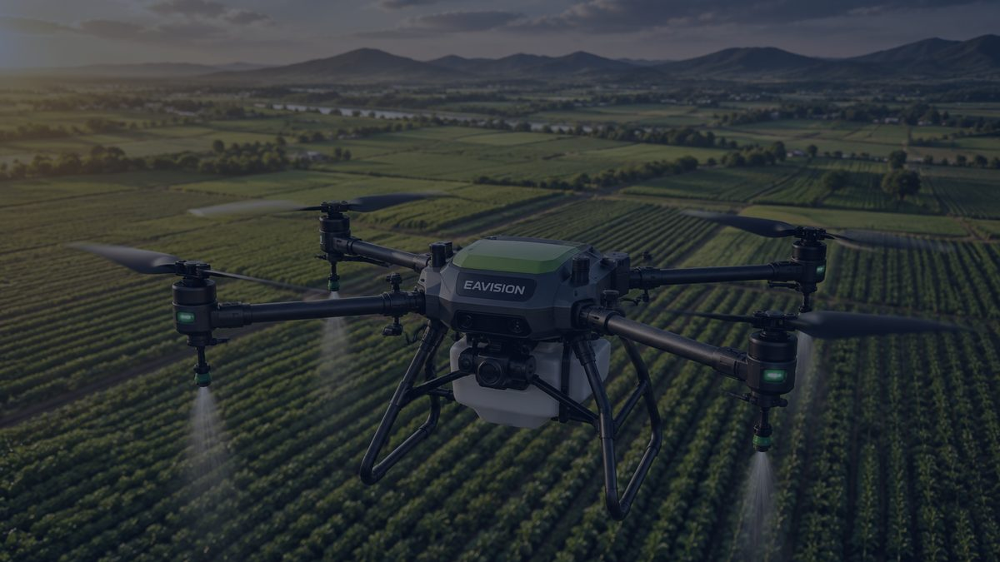

Semprot Malam Hari Saat Kemarau Panas: Kenali Drone EAVision EA-30X dan EA-30XP
Di tengah kemarau El Niño, menyemprot saat udara lebih sejuk jadi pilihan. EA-30X dan EA-30XP dirancang untuk bekerja siang maupun malam.
Spraying at Night in the Hot Dry Season: Meet the EAVision EA-30X and EA-30XP Drones
During the El Niño dry season, spraying when the air is cooler makes sense. The EA-30X and EA-30XP are built to work day and night.
炎热旱季选择夜间喷洒：认识EAVision EA-30X与EA-30XP无人机
厄尔尼诺旱季期间，趁凉爽时段喷洒更有效。EA-30X和EA-30XP专为昼夜作业而设计。

Kemarau 2026 lebih kering dan panjang dari biasanya akibat El Niño, menurut BMKG. Di siang hari yang terik, menyemprot tanaman menjadi kurang efektif.
Kenapa Menyemprot Saat Udara Sejuk?
Saat suhu tinggi, larutan pestisida mudah menguap sebelum sempat bekerja, dan butiran semprotan yang halus mudah terbawa udara panas yang bergerak ke atas. Karena itu, penyemprotan dianjurkan pada pagi atau sore hari.
Masalahnya, waktu pagi dan sore terbatas, sementara lahan yang harus disemprot bisa sangat luas. Di sinilah drone yang mampu terbang malam hari menjadi pilihan.
EAVision EA-30X
Drone penyemprot quad-rotor berbadan lebar ini dilengkapi lampu navigasi malam eaNLS dengan terang hingga 700 lux pada jarak 5 m, serta penglihatan binokular untuk operasi mandiri siang maupun malam.
Nosel kabut bimodalnya menghasilkan ukuran tetesan 20–250 μm yang dapat diatur, dan drone dapat terbang mengikuti kanopi tanaman hingga ketinggian 0,7 m untuk mengurangi penguapan dan hanyutan semprotan. Pompanya dilengkapi flowmeter ultrasonik dengan tingkat kesalahan di bawah 5%. Lihat detail EA-30X.
EAVision EA-30XP
Versi pengembangan EA-30X dengan persepsi 3D binokular yang dipadukan radar gelombang milimeter, LiDAR, dan radar ultrasonik untuk mendeteksi rintangan secara real-time.
Sistem terbang malam EA-NLS 3.0 menerangi area hingga 400 m², dan kamera FPV dengan tampilan AR membantu operator melihat arah dan jarak rintangan. Drone ini juga bisa terbang sangat rendah mengikuti kontur medan, sehingga cocok untuk kebun di perbukitan. Lihat detail EA-30XP.
Tetap Utamakan Keselamatan
Sebelum terbang malam, petakan lahan dan rintangan seperti pohon, tiang, dan kabel pada siang hari. Pastikan area kerja bebas dari orang dan ternak, dan selalu ikuti petunjuk operasional dari pabrikan.
Kesimpulan
Di musim kemarau yang panas, waktu menyemprot sama pentingnya dengan alat yang dipakai. Drone dengan kemampuan terbang malam memberi keleluasaan untuk bekerja saat udara lebih sejuk dan semprotan lebih efektif.
Tertarik mencoba EA-30X atau EA-30XP? PT Diesel Agri Sukses Sejahtera adalah distributor resmi EAVision dan siap membantu demo di lahan Anda.
Butuh saran? Hubungi kami.
Sumber: BMKG, Kompas TV, Jalatani, Politeknik Pertanian Negeri Kupang.
According to BMKG, the 2026 dry season is drier and longer than usual because of El Niño. Under the midday sun, crop spraying becomes less effective.
Why Spray When It's Cooler?
In high temperatures, pesticide solution evaporates before it can work, and fine droplets are easily carried off by rising hot air. That is why spraying is recommended in the morning or late afternoon.
The problem is that mornings and afternoons are short, while the area to be sprayed can be very large. This is where drones that can fly at night come in.
EAVision EA-30X
This wide-body quad-rotor spray drone has eaNLS night navigation lights reaching up to 700 lux at 5 m, plus binocular vision for autonomous operation day and night.
Its bimodal mist nozzles produce adjustable droplets of 20–250 μm, and the drone can follow the crop canopy as low as 0.7 m to reduce evaporation and drift. The pump uses an ultrasonic flowmeter with an error rate below 5%. View EA-30X details.
EAVision EA-30XP
An upgraded EA-30X with 3D binocular perception combined with millimetre-wave radar, LiDAR, and ultrasonic radar for real-time obstacle detection.
The EA-NLS 3.0 night flight system lights up an area of up to 400 m², and an FPV camera with an AR display shows the operator the direction and distance of obstacles. It can also fly very low following the terrain, making it well suited to hillside orchards. View EA-30XP details.
Put Safety First
Before a night flight, map the field and obstacles such as trees, poles, and cables during daylight. Make sure the work area is clear of people and livestock, and always follow the manufacturer's operating instructions.
Conclusion
In a hot dry season, when you spray matters as much as what you spray with. Drones that can fly at night give you the flexibility to work when the air is cooler and spraying is more effective.
Interested in trying the EA-30X or EA-30XP? PT Diesel Agri Sukses Sejahtera is the authorised EAVision distributor and is ready to arrange a demo on your land.
Need advice? Contact us.
Sources: BMKG, Kompas TV, Jalatani, Politeknik Pertanian Negeri Kupang.
据印尼气象局（BMKG）称，受厄尔尼诺影响，2026年旱季比往年更干燥、更漫长。在烈日当空的正午，喷洒作物的效果会大打折扣。
为什么要在凉爽时喷洒？
气温高时，药液还没来得及发挥作用就已蒸发，细小雾滴也容易被上升的热空气带走。因此，建议在早上或傍晚喷洒。
问题在于早晚的时间有限，而需要喷洒的面积可能很大。这时，能够夜间飞行的无人机就成了理想选择。
EAVision EA-30X
这款宽体四旋翼植保无人机配备eaNLS夜航灯，5米处照度可达700勒克斯，并配有双目视觉，可昼夜自主作业。
其双模雾化喷头可调节20–250 μm的雾滴粒径，无人机可贴近作物冠层低至0.7米飞行，减少蒸发和飘移。水泵配有超声波流量计，误差低于5%。查看EA-30X详情。
EAVision EA-30XP
EA-30X的升级版，将3D双目感知与毫米波雷达、激光雷达和超声波雷达相结合，实时探测障碍物。
EA-NLS 3.0夜航系统照明面积可达400平方米，带AR显示的FPV摄像头帮助操作员查看障碍物的方向和距离。它还能贴地仿形超低空飞行，非常适合山地果园。查看EA-30XP详情。
安全第一
夜间飞行前，请在白天勘察地块，标记树木、电线杆和电缆等障碍物。确保作业区域内无人员和牲畜，并始终遵循厂家的操作说明。
结论
在炎热的旱季，喷洒时机与所用设备同样重要。具备夜航能力的无人机让您可以在空气凉爽、喷洒效果更好的时段灵活作业。
想试用EA-30X或EA-30XP？ PT Diesel Agri Sukses Sejahtera 是EAVision授权经销商，可为您安排田间演示。
需要建议？联系我们。
资料来源： BMKG, Kompas TV, Jalatani, Politeknik Pertanian Negeri Kupang.